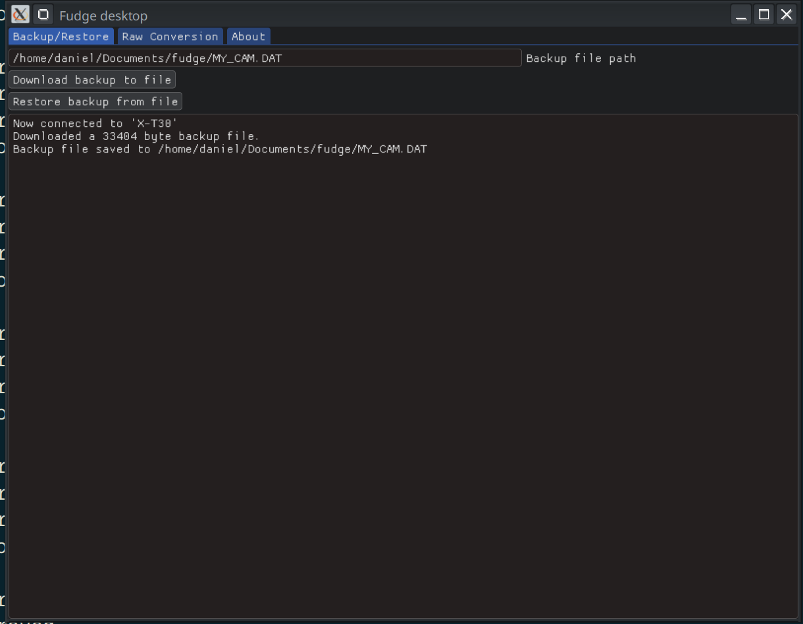

Fudge for Desktop released
Fujifilm has a lot of desktop software:
- FUJIFILM TETHER APP
- FUJIFILM X Acquire
- FUJIFILM X RAW STUDIO
- FUJIFILM PC AutoSave
- FUJIFILM X Webcam
Ever wondered if somebody would come along and make open-source alternatives? Well, wonder no more.
Introducing:
Fudge for Linux, Windows, and MacOS.
Currently, this software has two main features:
- Backup and Restore settings (X Acquire functionality)
- RAF->JPG Raw Conversion (X RAW Studio functionality)
It comes with a bunch of CLI options:
Fudge 0.1.0
Compilation date: April 1 2025
--list
List all PTP devices connected to this computer
--dev <device number>
Select a device to connect to instead of choosing the first available one.
--raw <input raf> <output jpeg path> <profile file>
Does a Raw conversion based on information parsed from a FP1/FP2/FP3 file.
--backup <output dat path>
Backs up camera settings to file.
--restore <input dat path>
Load camera settings from file.
--dump-usb
Dump all info on a camera. If something goes wrong you may want to send this info to developers.
--script <filename>
Execute a Lua script using fudge bindings
--parse-fp <filename>
Parse and dump a FP1/FP2/FP3 fileAnd the most awful looking UI you’ve ever seen: 
It even has Lua bindings.
$ cat test.lua
x = ptp.getDeviceInfo()
print("You are connected to a " .. x["model"])
$ fudge --script test.lua
Connected to a Fuji camera, running test.lua
You are connected to a X-H1Raw Conversion
The main blocker for writing an X Raw Studio replacement has been the proprietary Fujifilm profile formats. To reverse-engineer them, I used vcam, my camera emulator project, to spoof X Raw Studio running in a VM through vhci-hcd. I’ll spare you the technical details, but this allowed me to manually clean-room reverse-engineer these profile formats and create a library to handle them.
The result is a CLI version of X Raw Studio.
Usage is as simple as: RAF + FP1/FP2/FP3 = output.jpg
$ fudge --raw ~/Pictures/DSC0000.RAF output.jpg MyProfile.FP1FP1/FP2/FP3 files are Fuji’s XML-based profile format used by X Raw Studio. You can read more about them here.
Note: This hasn’t been well-tested and whether it may cause harm is unknown. To my knowledge this is the first time somebody has reverse-engineered the raw conversion protocol.